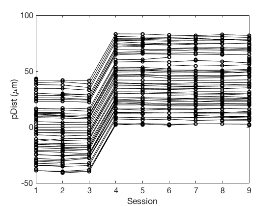
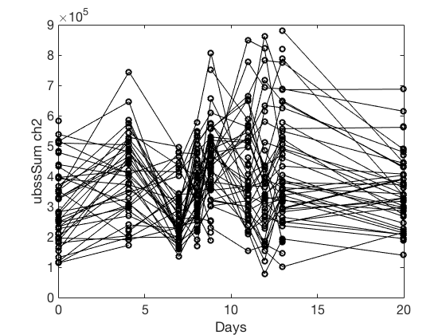
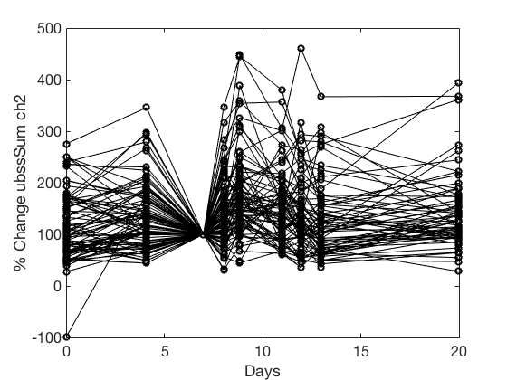
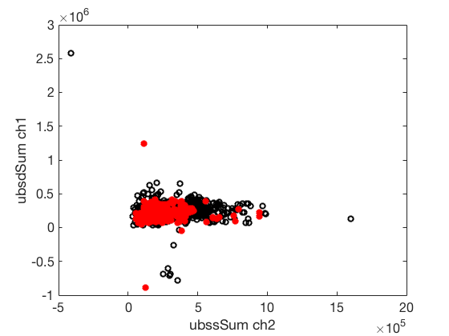
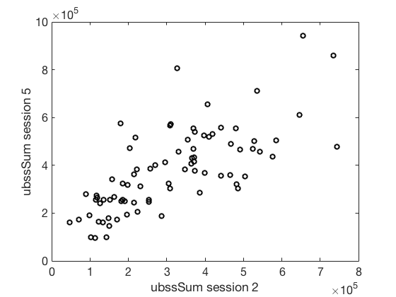
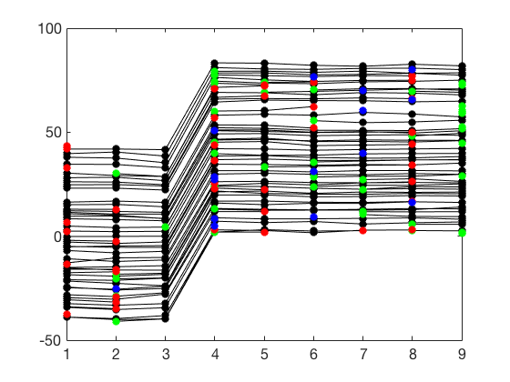
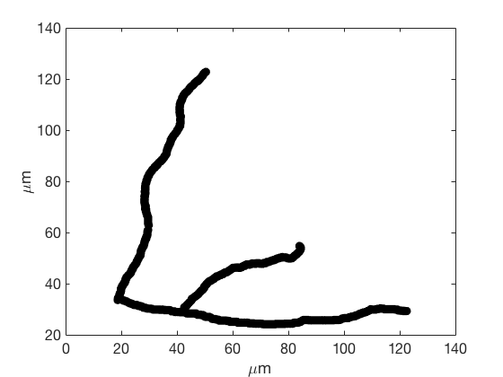
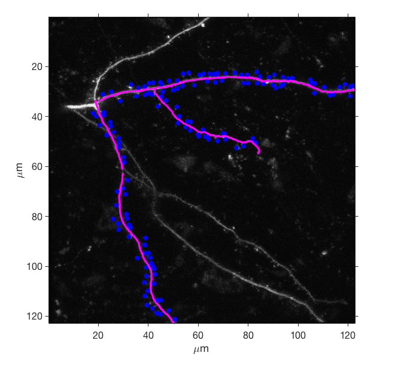
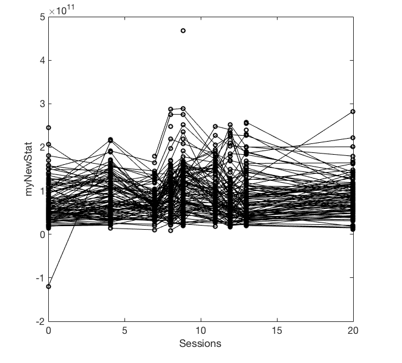

Contents
- Set default plot look and feel
- Load a map
- Using the default plot structure
- Example 1, plotting one stat versus session number
- Example 1.1, plotting one stat versus days
- Example 1.2, one stat versus days as percent change of session 3
- Example 1.3, get the mean/sd/se/n for each session
- Example 2, pulling and plotting 2 stats from 2 different channels
- Example 2.1, overlay map segment 2 in red
- Example 2.3, plot a single stat for two different sessions
- Example 3, plot added (green) and subtracted (red) and transient (blue)
- Example 4, load a number of maps and pool a stat
- Example 5, Generate segment statistics for a given stat
- Example 5.1, calculate autocorrelation for each segment for a single stat
- Example 6, Plot tracing
- Example 7, Display maximal intensity projection with annotations and tracing
- Example 8, Plot a stat versus session using session condition
- Example 9, Find notes in a map
- Example 10, Add new analysis to a map
% Robert Cudmore % 20170927 % todo: % (1) [done] load multiple maps % (2) [done] plot map based on session condition % (3) pool multiple maps using session condition % (4) nearest-neighbor % (5) segment auto-correlation % (6) Append to map stats % % todo: [done] write example to get stat and pDist, sort stat by pDist to get % spines in segment order % todo: example to plot session condition across maps % todo: make GetMapValues return session vector if ps.session ~= nan % todo: make GetMapValues fill in ps.val (not ps.y) and % ps.sessionIdx (not ps.x) cd('/Users/cudmore/Dropbox/matlab');
Set default plot look and feel
set(0,'DefaultLineMarkerSize',7); set(0,'defaultAxesFontSize',16);
Load a map
mapPath = 'd:/Users/cudmore/MapManagerData/Richard/rr30a'; % Windows mapPath = '/Users/cudmore/Dropbox/MapManagerData/richard/rr30a'; % Mac OS obj = mmMap(mapPath);
ans =
'Loaded map rr30a in 2.320001 seconds'
Using the default plot structure
Throughout these exmaples we will use a structure to define plotting parameters. Get the default plot structure using mmMap.defaultPlotStruct(). see: help mmMap.defaultPlotStruct
ps = mmMap.defaultPlotStruct();
Example 1, plotting one stat versus session number
see: mmPlot.mapPlot0()
ps = mmMap.defaultPlotStruct(); ps.stat = 'pDist'; %'ubssSum'; ps.mapsegment = 0; % set to NaN for all ps = obj.GetMapValues(ps); % plot with circles and lines plot(ps.x,ps.y,'ok', ps.x',ps.y','-k'); xlabel('Session'); ylabel('pDist (\mum)');
Example 1.1, plotting one stat versus days
see: mmPlot.mapPlot()
ps = mmMap.defaultPlotStruct(); ps.stat = 'ubssSum'; %'ubssSum'; ps.channel = 2; ps.mapsegment = 0; % set to NaN for all ps = obj.GetMapValues(ps); plot(ps.days,ps.y,'ok', ps.days',ps.y','-k'); xlabel('Days'); ylabel([ps.stat ' ch' num2str(ps.channel)]);
Example 1.2, one stat versus days as percent change of session 3
see: mmPlot.mapPlotNorm()
ps = mmMap.defaultPlotStruct(); ps.stat = 'ubssSum'; %'ubssSum'; ps.channel = 2; ps.mapsegment = nan; % set to NaN for all ps = obj.GetMapValues(ps); normSession = 3; percentChange = bsxfun(@rdivide, ps.y, ps.y(:,normSession)) * 100; plot(ps.days, percentChange, 'ok', ps.days',percentChange','-k'); xlabel('Days'); ylabel(['% Change ' ps.stat ' ch' num2str(ps.channel)]);
Example 1.3, get the mean/sd/se/n for each session
THIS IS NOT WORKING notNan = ~isnan(percentChange); % get non nan 'logical array' once and reuse theMean = mean(notNan,1); thestd = std(notNan,1); theCount = sum(notNan,1); these = thestd ./ sqrt(theCount-1); theDays = mean(~isnan(ps.days)); plot(ps.days, percentChange, 'ok', ps.days',percentChange','-k'); hold on errorbar(ps.days,theMean, these)
Example 2, pulling and plotting 2 stats from 2 different channels
ps1 = mmMap.defaultPlotStruct(); ps1.mapsegmentid = NaN; % set to NaN for all ps1.stat = 'ubssSum'; % background subtracted spine sum ps1.channel = 2; ps1 = obj.GetMapValues(ps1); ps2 = ps1; % make sure they match (e.g. mapsegmentid) ps2.stat = 'ubsdSum'; % background subtracted dendrite sum ps2.channel = 1; ps2 = obj.GetMapValues(ps2); plot(ps1.y, ps2.y,'ok'); xlabel([ps1.stat ' ch' num2str(ps1.channel)]); ylabel([ps2.stat ' ch' num2str(ps2.channel)]);

Example 2.1, overlay map segment 2 in red
This is useful to see the distribution of one segment in the context of all other segments
ps1.mapsegment = 2; ps1 = obj.GetMapValues(ps1); ps2.mapsegment = 2; ps2 = obj.GetMapValues(ps2); hold on; plot(ps1.y, ps2.y, 'or', 'MarkerFaceColor', 'r'); hold off;
Example 2.3, plot a single stat for two different sessions
see: mmPlot.mapPlotSession() This is useful to see how stats evolve over time and can be used to examine percent or absolute change
ps = mmMap.defaultPlotStruct(); ps.stat = 'ubssSum'; ps.channel = 2; ps = obj.GetMapValues(ps); % ps.y has ps.stat for all sessions xSession = 2; ySession = 5; plot(ps.y(:,xSession), ps.y(:,ySession), 'ok'); xlabel([ps.stat ' session ' num2str(xSession)]); ylabel([ps.stat ' session ' num2str(ySession)]); %Homework: Fit a line to this session plot to see if the stat changes with time.
Example 3, plot added (green) and subtracted (red) and transient (blue)
%todo: rewrite to return all dynamics in plot struct ds = mmMap.defaultPlotStruct(); ds = obj.GetMapDynamics(ds); ps = mmMap.defaultPlotStruct(); ps.stat = 'pDist'; %'ubssSum'; ps.mapsegment = 0; % set to NaN for all ps = obj.GetMapValues(ps); [m,n] = size(ps.y); % GetMapValues() and GetMapDynamics() return the same size yAdd = nan(m,n); yAdd(ds.added==1) = ps.y(ds.added==1); ySub = nan(m,n); ySub(ds.subtracted==1) = ps.y(ds.subtracted==1); yTransient = nan(m,n); yTransient(ds.transient==1) = ps.y(ds.transient==1); plot(ps.x, ps.y, 'ok', 'MarkerFaceColor', 'k', 'MarkerEdgeColor', 'k'); hold on; plot(ps.x', ps.y', '-k'); hold on; plot(ps.x, yAdd, 'og', 'MarkerFaceColor', 'g', 'MarkerEdgeColor', 'g'); plot(ps.x,ySub,'or', 'MarkerFaceColor', 'r', 'MarkerEdgeColor', 'r'); plot(ps.x,yTransient,'ob', 'MarkerFaceColor', 'b', 'MarkerEdgeColor', 'b'); hold off;
Example 4, load a number of maps and pool a stat
todo: finish pooling across session conditions (condStr) in poolMaps.m
myMapList = {};
numLoadedMaps = 1;
folderPath = '/Users/cudmore/Dropbox/MapManagerData/richard';
files = dir(folderPath);
subFolders = files([files.isdir]);
for i = 1:length(subFolders)
folderName = subFolders(i).name;
if strcmp(folderName,'.') || strcmp(folderName,'..')
continue
end
mapPath = [folderPath '/' folderName];
myMapList{numLoadedMaps} = mmMap(mapPath);
numLoadedMaps = numLoadedMaps + 1;
end
ans =
'Loaded map rr30a in 2.447364 seconds'
ans =
'Loaded map rr49c in 1.455828 seconds'
ans =
'Loaded map rr50b in 2.370052 seconds'
ans =
'Loaded map rr52c in 2.862264 seconds'
ans =
'Loaded map rr58b in 3.861079 seconds'
ans =
'Loaded map rr58c in 2.303042 seconds'
Example 5, Generate segment statistics for a given stat
See segmentStats.m for a template function to write your own analysis code todo: make this a member function of mmMap
channel = 2;
fnReference = @segmentStats;
mySegmentStats = segmentanalysis(obj, 'ubssSum', channel, fnReference);
mySegmentStats
mySegmentStats =
5×9 struct array with fields:
mean
std
count
se
Example 5.1, calculate autocorrelation for each segment for a single stat
This is simple, we make a new matlab function (in a .m file) following the prototype of segmentStats() in segmentStats.m. In this function we (1) sort val along pDist and (2) use autocorr function (Requires xxx toolbox)
Example 6, Plot tracing
see: mmPlot.mapPlotTracing()
% look at first 5 rows in linedb table obj.linedb{1}(1:5,:) ps = mmMap.defaultPlotStruct(); ps.mapsegment = NaN; %0 ps.session = 1; ps = obj.GetLine(ps); plot(ps.line(:,1), ps.line(:,2), '.k', 'MarkerSize', 25); xlabel('\mum'); ylabel('\mum');
ans =
5×22 table
node type x y z zFloor radius radiusFit prevNode ID gID tx ty tz sDist pDist Filament SetID GroupID sDist3d pDist3d Var22
____ ____ _____ ____ __ ______ ______ _________ ________ __ ___ ___ ___ ___ _____ _______ ________ _____ _______ _______ _______ _____
NaN NaN 42.48 28.8 31 31 NaN NaN -1 0 NaN NaN NaN NaN 0 -41.398 NaN NaN NaN 0 -42.243 ''
NaN NaN 42.6 28.8 31 31 NaN NaN 0 0 NaN NaN NaN NaN 0.12 -41.278 NaN NaN NaN 0.12 -42.123 ''
NaN NaN 42.72 28.8 31 31 NaN NaN 1 0 NaN NaN NaN NaN 0.24 -41.158 NaN NaN NaN 0.24 -42.003 ''
NaN NaN 42.84 28.8 31 31 NaN NaN 2 0 NaN NaN NaN NaN 0.36 -41.038 NaN NaN NaN 0.36 -41.883 ''
NaN NaN 42.96 28.8 31 31 NaN NaN 3 0 NaN NaN NaN NaN 0.48 -40.918 NaN NaN NaN 0.48 -41.763 ''
 Example 7, Display maximal intensity projection with annotations and tracing
see: mmPlot.mapPlotImage()
ps = mmMap.defaultPlotStruct(); ps.session = 1; ps.channel = 2;showAnnotations = 1; showLines = 1; plotMaxProject(obj,ps,showAnnotations, showLines);
Example 8, Plot a stat versus session using session condition
see: mmPlot.mapPlotCondition()
%Each session in a map has a session condition %obj.mapNV('condStr',:) %mp = mmPlot(obj); %h = mp.mapPlotCondition('ubssSum', 2, {'a1', 'b1', 'c2'}); % You can easily set session conditions yourself %obj.mapNV('cond',[1 2 3 4]) = ['c1', 'c2','e1','e2']
Example 9, Find notes in a map
result1 = obj.find('note', 'Dim?'); result1(1:5,:) % view table of first 5 results result2 = obj.find('note', '*'); result2(1:5,:) % view table of first 5 results
ans =
5×52 table
session Idx roiType roiTypeNum x y z channel groupID parentID cPnt sDist pDist cAuto cAngle cLine cLineNum cx cy cz cDate cTime mDate mTime cSeconds mSeconds userName note edgeList isDirty isBad dynBad intBad progType madeFrom analParam analResult1 analResult2 analResult3 analResult4 user1 user2 user3 userBool1 userBool2 userBool3 userType bSpineMap bSpineIdx error warning Var51
_______ ___ __________ __________ ______ ______ __ _______ _______ ________ ____ ______ _______ _____ ______ _________ ________ ______ ______ ____ __________ __________ __________ __________ __________ __________ ___________ ______ ________ _______ _____ ______ ______ ________ ________ _________ ___________ ___________ ___________ ___________ _____ _____ _____ _________ _________ _________ ________ _________ _________ _____ _______ _____
1 287 'spineROI' 0 19.033 39.9 32 1 NaN 4 1920 6.0462 -9.8088 0 265.88 'radius1' 1 20.095 39.154 31 2015-10-14 '12:26:18' 2015-12-14 '09:29:34' 3.5277e+09 3.5329e+09 'Nancy Luo' 'Dim?' NaN NaN NaN NaN NaN NaN 1 NaN NaN NaN NaN NaN NaN NaN NaN NaN NaN NaN NaN NaN NaN '' [NaN] ''
3 74 'spineROI' 0 80.472 26.17 33 1 NaN 0 306 38.406 -2.76 0 280.4 'radius1' 1 80.16 24.47 33 2015-10-07 '12:55:24' 2015-12-14 '09:29:36' 3.5271e+09 3.5329e+09 'Nancy Luo' 'Dim?' NaN NaN NaN NaN NaN NaN 1 NaN NaN NaN NaN NaN NaN NaN NaN NaN NaN NaN NaN NaN NaN [NaN] [NaN] ''
3 77 'spineROI' 0 60.672 23.12 32 1 NaN 0 132 17.29 -23.876 0 33.099 'radius2' 2 59.51 24.755 33.4 2015-10-07 '13:02:54' 2015-12-14 '09:29:36' 3.5271e+09 3.5329e+09 'Nancy Luo' 'Dim?' NaN NaN NaN NaN NaN NaN 1 NaN NaN NaN NaN NaN NaN NaN NaN NaN NaN NaN NaN NaN NaN [NaN] [NaN] ''
3 78 'spineROI' 0 56.722 22.07 33 1 NaN 0 122 16.04 -25.126 0 121.72 'radius2' 2 58.44 24.85 33 2015-10-07 '13:04:32' 2015-12-14 '09:29:36' 3.5271e+09 3.5329e+09 'Nancy Luo' 'Dim?' NaN NaN NaN NaN NaN NaN 1 NaN NaN NaN NaN NaN NaN NaN NaN NaN NaN NaN NaN NaN NaN [NaN] [NaN] ''
5 221 'spineROI' 0 31.102 83.143 14 1 NaN 2 1288 22.471 -21.227 0 458.29 'radius2' 2 30.071 83.299 15 2015-10-09 '13:39:55' 2015-12-14 '09:29:38' 3.5272e+09 3.5329e+09 'Nancy Luo' 'Dim?' NaN NaN NaN NaN NaN NaN 1 NaN NaN NaN NaN NaN NaN NaN NaN NaN NaN NaN NaN NaN NaN '' [NaN] ''
ans =
5×52 table
session Idx roiType roiTypeNum x y z channel groupID parentID cPnt sDist pDist cAuto cAngle cLine cLineNum cx cy cz cDate cTime mDate mTime cSeconds mSeconds userName note edgeList isDirty isBad dynBad intBad progType madeFrom analParam analResult1 analResult2 analResult3 analResult4 user1 user2 user3 userBool1 userBool2 userBool3 userType bSpineMap bSpineIdx error warning Var51
_______ ___ __________ __________ ______ ______ __ _______ _______ ________ ____ ______ _______ _____ ______ _________ ________ ______ ______ ____ __________ __________ __________ __________ __________ __________ ___________ __________________ ________ _______ _____ ______ ______ ________ ________ _________ ___________ ___________ ___________ ___________ _____ _____ _____ _________ _________ _________ ________ _________ _________ _____ _______ _____
1 78 'spineROI' 0 83.545 26.578 29 1 NaN 0 359 43.707 2.3091 0 263.48 'radius1' 1 83.779 25.223 30 2015-10-02 '15:46:10' 2015-12-14 '09:29:34' 3.5266e+09 3.5329e+09 'Nancy Luo' 'Spine?' NaN NaN 0 NaN NaN NaN 0 NaN NaN NaN NaN NaN NaN NaN NaN NaN NaN NaN NaN NaN NaN '' [NaN] ''
1 217 'spineROI' 0 42.316 106.98 18 1 NaN 2 1527 51.967 6.5262 0 439.09 'radius2' 2 41.34 107.07 19 2015-10-09 '12:25:10' 2015-12-14 '09:29:34' 3.5272e+09 3.5329e+09 'Nancy Luo' 'Is this a spine?' NaN NaN NaN NaN NaN NaN 1 NaN NaN NaN NaN NaN NaN NaN NaN NaN NaN NaN NaN NaN NaN '' [NaN] ''
1 287 'spineROI' 0 19.033 39.9 32 1 NaN 4 1920 6.0462 -9.8088 0 265.88 'radius1' 1 20.095 39.154 31 2015-10-14 '12:26:18' 2015-12-14 '09:29:34' 3.5277e+09 3.5329e+09 'Nancy Luo' 'Dim?' NaN NaN NaN NaN NaN NaN 1 NaN NaN NaN NaN NaN NaN NaN NaN NaN NaN NaN NaN NaN NaN '' [NaN] ''
2 213 'spineROI' 0 28.72 83.673 17 1 NaN 2 850 21.291 -22.175 0 257.29 'radius1' 1 30.901 82.771 16.4 2015-10-09 '13:15:59' 2015-12-14 '09:29:35' 3.5272e+09 3.5329e+09 'Nancy Luo' 'Dimp' NaN NaN NaN NaN NaN NaN 1 NaN NaN NaN NaN NaN NaN NaN NaN NaN NaN NaN NaN NaN NaN [NaN] [NaN] ''
3 70 'spineROI' 0 93.996 26.816 34 1 NaN 0 423 52.633 11.467 0 278.65 'radius1' 1 93.84 25.79 33 2015-10-02 '17:12:21' 2015-12-14 '09:29:36' 3.5267e+09 3.5329e+09 'Nancy Luo' 'dim' NaN NaN NaN NaN NaN NaN 1 NaN NaN NaN NaN NaN NaN NaN NaN NaN NaN NaN NaN NaN NaN [NaN] [NaN] ''
Example 10, Add new analysis to a map
ps = mmMap.defaultPlotStruct(); ps.stat = 'ubssSum'; %'ubssSum'; ps.channel = 2; ps = obj.GetMapValues(ps); newStatName = 'myNewStat'; [m,n] = size(ps.y); newStatValues = NaN(m,n); newStatValues = ps.y .* mean(ps.y(~isnan(ps.y))); % ubssSum / mean(ubssSum); obj = obj.addUserStat(newStatName, newStatValues); % and then plot the new stat myMapPlot = mmPlot(obj); myMapPlot.mapPlot(NaN, newStatName, NaN);